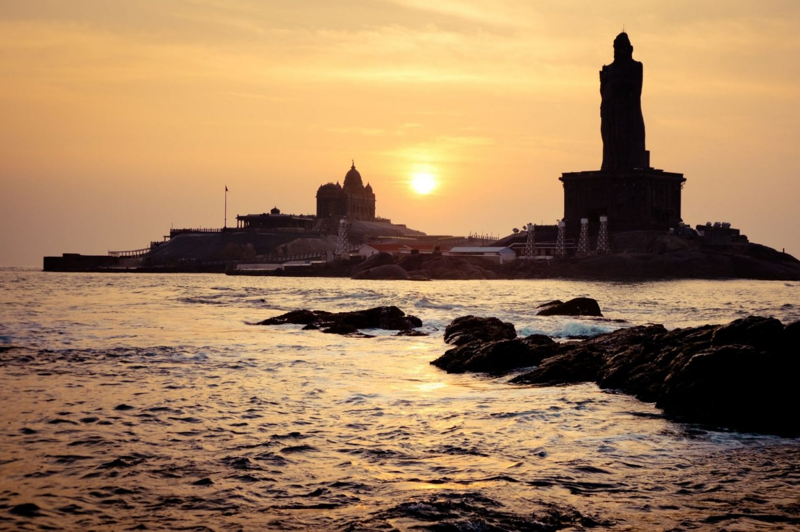
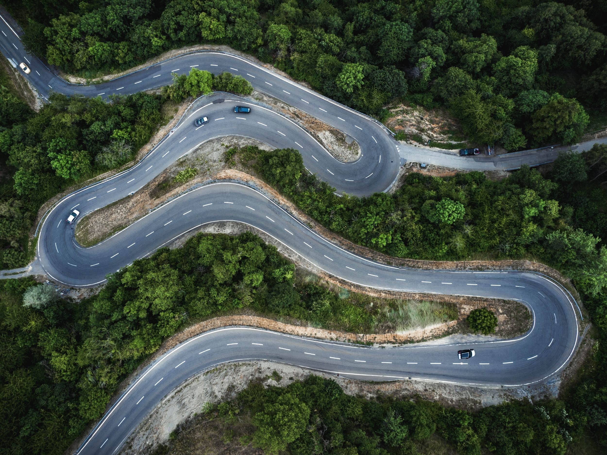
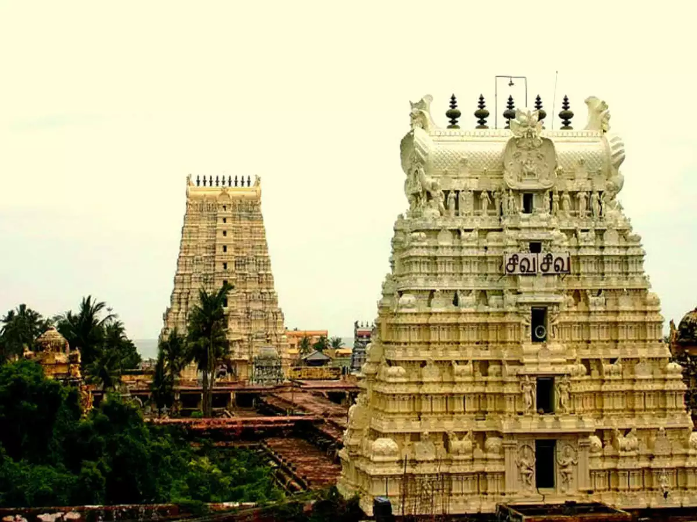
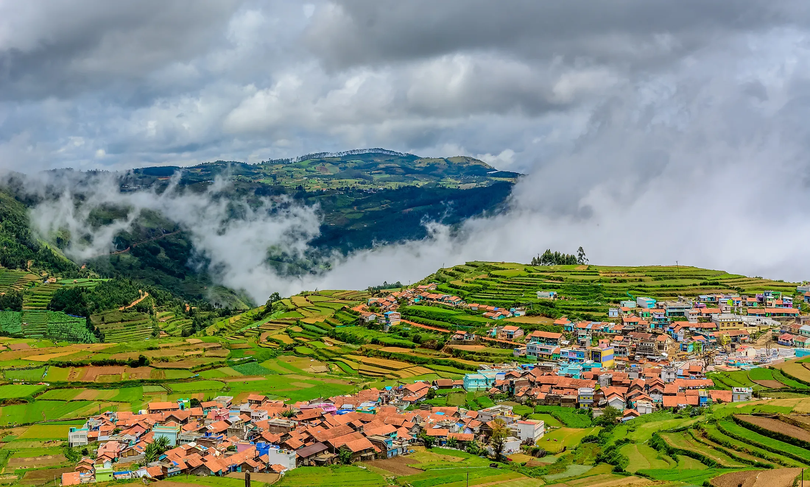

kanyakumari
Kanniyakumari is a special destination in many different ways. It is the southernmost tip of the mainland of India. Three major water bodies – the Arabian Sea, Bay of Bengal and the Indian Ocean – converge right here in Kanniyakumari. Such a geographically blessed destination is rare and these features make Kanniyakumari one of the most visited places in India annually.
The place gets its name from the Hindu goddess Devi Kanniyakumari, who is considered to be the sister of Lord Krishna. When the Dutch East India Company conquered Portuguese Ceylon from the Portuguese East Indies, the name Kanniyakumari was shortened to Comorin. Eventually during the British regime in India, the destination began to be called Cape Comorin. Later, the Government of India renamed it as Kanniyakumari.
CHENNAI RAILWAY STATION
Chennai Central (officially Puratchi Thalaivar Dr. M.G. Ramachandran Central Railway Station, formerly Madras Central)(station code: MAS[5]), is an NSG–1 category Indian railway station in Chennai railway division of Southern Railway zone.[6] It is the main railway terminus in the city of Chennai, Tamil Nadu, India. It is the busiest railway station in South India and one of the most important hubs in the country. It is connected to Moore Market Complex railway station, Chennai Central metro station, Chennai Park railway station, and Chennai Park Town railway station. It is about 1.8 km (1.1 mi) from the Chennai Egmore railway station. The terminus connects the city to northern India, including Kolkata, Mumbai, and New Delhi, and different parts of India.

YERCARD
Yercaud is a hill station town in the south Indian state of Tamil Nadu. It lies in the Shevaroy Hills, known for their orange groves, and coffee, fruit and spice plantations. Yercaud Lake has a boathouse, and is surrounded by gardens and woods. On the lake’s eastern shore, Anna Park has local plants and a Japanese garden with bonsai. To the southwest, Lady’s Seat vantage point has a watchtower with a telescope.Yercaud is famous for Kiliyur Falls which is located in the Eastern Ghats' Servaroyan Hills and is best observed during and after the monsoons because it is totally dry in summer. Kiliyur Falls is about 91 metres tall and offers spectacular valley views from the summit.
The nearest airport is Salem airport at a distance of 38 km (24 mi), which has limited domestic flights. The nearest major airport is Coimbatore International Airport located 170 km (110 mi) away.[3] The nearest railway station is Salem junction.[3] Government owned TNSTC operates public buses from Yercaud to Salem, which is connected to other major towns
RAMESWARAM TEMPLE
Ramanathaswamy temple is known for its imposing structure, majestic towers, intricate sculptural works and corridors, making it an architectural marvel. The main deity worshipped in the temple is in the form of lingam. There is also an idol of Nandi, which is a massive statue, about 17.5 feet tall. Other deities worshipped here include Goddess Vishalakshi, Parvathavardhini, Lord Vinayaka and Lord Subrahmanya, Utsava idol, Sayanagriha and Perumal.
The legend behind the temple is associated with Lord Rama from the Indian epic Ramayana. It is believed that Lord Rama, after defeating the demon king Ravana, wanted to worship Lord Shiva as part of atonement. He asks Hanuman to bring him a Linga from Kashi. When Hanuman delayed his return, Goddess Sita made a Shivalinga using sand so that Rama could offer his prayers. It is believed that the self-same Shiva Linga, known as Ramalingam, is now worshipped at the Ramanathaswamy temple. The lingam brought by Hanuman from Kailash is called VishwalingaThere are 22 Theerthams (holy water bodies) inside the temple where devotees bathe to atone for their sins.


OOTY
Ooty (short for Udhagamandalam) is a resort town in the Western Ghats mountains, in southern India's Tamil Nadu state. Founded as a British Raj summer resort, it retains a working steam railway line. Other reminders of its colonial past include Stone House, a 19th-century residence, and the circa-1829 St. Stephen’s Church. Its 55-acre Government Botanical Garden lies on the slopes of Doddabetta Peak
Ooty features a subtropical highland climate (Cwb) under Köppen climate classification.[26] Because of its high altitude, the temperatures are generally lower than the surrounding plains with the average between 10–25 °C (50–77 °F) during summer and 0–21 °C (32–70 °F) during winter.[2] The highest temperature ever recorded was 28.5 °C (83.3 °F) and the lowest temperature was −5.1 °C (22.8 °F).[27] The town gets heavy rainfall during both South-West and North-East monsoons and the average
KODAIKANAL
Kodaikanal is a hill town in the southern Indian state of Tamil Nadu. It’s set in an area of granite cliffs, forested valleys, lakes, waterfalls and grassy hills. At 2,000 meters above sea level, the town centers around man-made, star-shaped Kodaikanal Lake, bordered by evergreen forest. Rowing boats can be hired, and hikers and cyclists follow the 5k Lake Road path around the shore.
Kodaikanal is also popularly known as the princes of Hill Stations. The cool and misty weather, the scenic beauty of the rolling hills and the wooded forest of Kodaikanal and its surroundings will mesmerize any visitor throughout the year.
HOGENAKKAL
Hogenakal is situated at the borders of Karnataka at 46 kms from Dharmapuri. In Hogenakal the river Cauvery enters into Tamil Nadu as a big river with gushing water presentably as a natural falls. The name Hogenakal is derived from Kannada means ‘Smoky Rocks’. The river when falls on the rock below, the gushing force of water resembles like smoke emanating from the rocks.
At Hogenakal the water spreads for miles around and on these waters cruising on country made dinghies (PARISAL) is possible. Parisal ride will give an enthralling experience. Surrounding by hills at various heights Hogenakal offers the visitors a different ambience and refreshing relaxations. One could also take bath in the falls. Oil massaging by local people is a different experience.